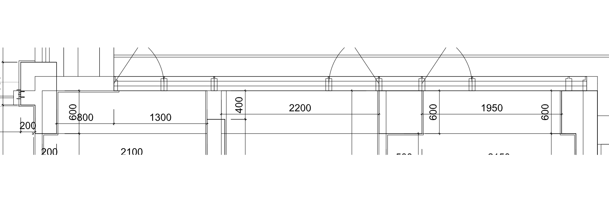
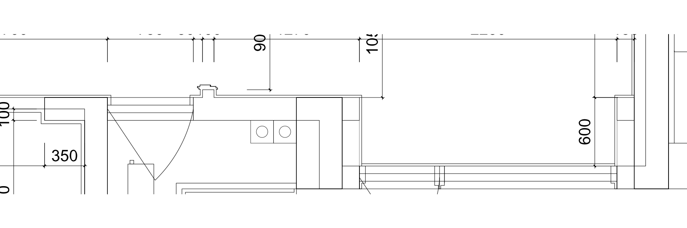

依据：交付DWG转DXF，建筑结构背景与定位尺寸叠加。水平尺寸按标注；窗台、窗顶高度沿用已有测量／暂定值，未从平面图推定立面。
| 位置 | 核对结果 | 本版处理 |
|---|---|---|
| 书房 | 2100开口内：左800实墙＋右1300窗段 | 玻璃由1490缩至1300，扩大左侧实墙 |
| 小次卧 | 2200窗段 | 原2195改2200；此处接近整段，不强行缩成2/3 |
| 主卧北侧 | 1950窗段，两侧柱垛 | 原1940改1950，窗侧墙体恢复实体进深 |
| 主卧南侧 | 局部窗段，两端实墙 | 保留测量2240，补两侧实体墙垛；不扩大到整墙 |
| 厨房、卫生间 | 原图是局部窗洞 | 保留现有860、550测量宽度及两侧墙体，不因截图改为通长玻璃 |
| 阳台 | 交付窗与未来封窗是两类构件 | 未来封窗分格仍为方案，DWG不能确认其施工分格 |


主卧窗侧实体墙垛沿用现有房间外边界。此轮未把全屋墙体整体缩放为DWG轴网；因此不能把当前模型整体坐标当作施工放线坐标。窗扇开启五金和具体立面分格尚未作厂家深化。